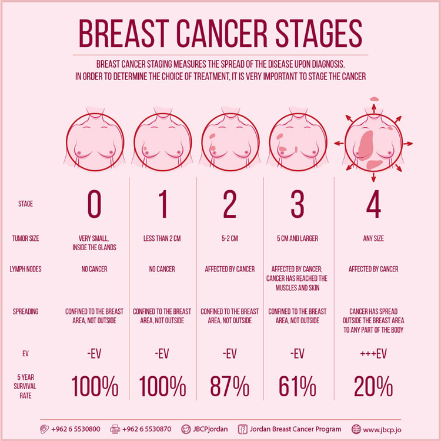

سرطان الثدي
Breast Cancer
التعريف بسرطان الثدي
يتكون الثدي من ثلاثة أجزاء رئيسية: الفصيصات والقنوات والنسيج الضام. الفصيصات هي الغدد التي تنتج
الحليب. القنوات عبارة عن أنابيب تنقل الحليب إلى الحلمة. يحيط النسيج الضام (الذي يتكون من الأنسجة الليفية
والدهنية) بكل شيء ويجمعه معًا.
سرطان الثدي مرض تنمو فيه خلايا الثدي غير الطبيعية بشكل خارج عن السيطرة وتشكل أوراما.ً ويمكن
الأورام إذا تركت دون علاج أن تنتشر في جميع أنحاء الجسم وتصبح قاتلة.
وتبدأ خلايا سرطان الثدي داخل قنوات الحليب و/أو الفصيصات المنتجة للحليب في الثدي.
والشكل الأولي لها (اللابِد في الموضع) لا يهدد الحياة ويمكن الكشف عنه في مراحل مبكرة.
ويمكن أن تنتشر الخلايا السرطانية إلى أنسجة الثدي القريبة (سرطان الثدي الغزوي).
ويخلق هذا أورامًا تسبب كتلًا أو سماكة.
ويمكن أن تنتشر السرطانات الغازية إلى العقد الليمفاوية القريبة أو أجهزة الجسم الأخرى (النقيلة) . ويمكن أن
تشكل النقيلة تهديدا للحياة وأن تكون قاتلة.
يحدث سرطان الثدي عندما تتحور خلايا الثدي وتصبح خلايا سرطانية تتكاثر وتشكل أورامًا.
يؤثر سرطان الثدي عادة على النساء والأشخاص الذين تم تحديدهم كأنثى عند الولادة (AFAB) بعمر 50 عامًا فما فوق،
ولكنه يمكن أن يؤثر أيضًا على الرجال والأشخاص الذين تم تحديدهم كذكور عند الولادة (AMAB) ،
وكذلك
النساء الأصغر سنًا. قد يعالج مقدمو الرعاية الصحية سرطان الثدي عن طريق الجراحة لإزالة الأورام أو
العلاج لقتل الخلايا السرطانية.

أنواع سرطان الثدي
يحدد مقدمو الرعاية الصحية أنواع السرطان وأنواعه الفرعية حتى يتمكنوا
من تصميم العلاج ليكون فعالاً قدر الإمكان مع أقل
عدد ممكن من الآثار الجانبية. تشمل الأنواع الشائعة من سرطان الثدي ما يلي:
- سرطان الأقنية الغازي (الارتشاحي) (IDC)
يبدأ هذا السرطان في قنوات الحليب وينتشر إلى أنسجة الثدي القريبة.
إنه النوع الأكثر شيوعًا من سرطان الثدي في الولايات المتحدة.
- سرطان الثدي الفصيصي
يبدأ سرطان الثدي هذا في الغدد المنتجة للحليب (الفصيصات) في الثدي
وغالبا ما ينتشر إلى أنسجة الثدي القريبة. إنه ثاني أكثر سرطانات الثدي شيوعًا في الولايات المتحدة.
- سرطان الأقنية الموضعي (DCIS)
مثل IDC ، يبدأ سرطان الثدي في قنوات الحليب. الفرق هو أن DCIS لا ينتشر خارج قنوات الحليب.
- سرطان الثدي الثلاثي السلبي (TNBC)
هذا السرطان الغازي عدواني وينتشر بسرعة أكبر من سرطانات الثدي الأخرى.
- سرطان الثدي الالتهابي (IBC)
هذا السرطان النادر سريع النمو يشبه الطفح الجلدي على ثديك IBC نادر في الولايات المتحدة.
- مرض باجيت في الثدي
يؤثر هذا السرطان النادر على جلد الحلمة وقد يبدو كطفح جلدي أقل من 4% من جميع حالات سرطان الثدي هي مرض باجيت في الثدي.
الأنواع الفرعية لسرطان الثدي
يصنف مقدمو الرعاية الصحية الأنواع الفرعية لسرطان الثدي حسب حالة الخلايا المستقبلة. المستقبلات هي جزيئات البروتين الموجودة على أسطح الخلايا أو عليها. يمكنها جذب أو الارتباط بمواد معينة في الدم ، بما في ذلك الهرمونات مثل الاستروجين والبروجستيرون. يساعد الإستروجين والبروجستيرون الخلايا السرطانية على النمو. ومعرفة ما إذا كانت الخلايا السرطانية تحتوي على مستقبلات هرمون الاستروجين أو البروجسترون يساعد مقدمي الرعاية الصحية على التخطيط لعلاج سرطان الثدي.
تشمل الأنواع الفرعية ما يلي:
- تحتوي سرطانات الثدي الإيجابية (ER+) على مستقبلات هرمون الاستروجين.
- تحتوي سرطانات الثدي الإيجابية (PR+) على مستقبلات هرمون البروجسترون
- تحتوي سرطانات الثدي الإيجابية للموارد البشرية (HR+) على مستقبلات هرمون الاستروجين والبروجستيرون.
- لا تحتوي سرطانات الثدي سلبية الموارد البشرية (HR-) على مستقبلات هرمون الاستروجين أو البروجسترون.
- سرطانات الثدي الإيجابية HER2 (HER2+) ، والتي تحتوي على مستويات أعلى من الطبيعي من بروتين HER2. ويساعد هذا البروتين الخلايا السرطانية على النمو. حوالي 15% إلى 20% من جميع حالات سرطان الثدي تكون إيجابية لـ HER2.
معدلات إنتشار المرض
سرطان الثدي هو أكثر أنواع السرطان شيوعًا بين النساء في الولايات المتحدة، باستثناء سرطان الجلد . وهو
يمثل حوالي 30% (أو 1 من كل 3 ) من جميع حالات السرطان الجديدة لدى النساء كل عام.
لقد انخفضت معدلات الوفيات بسرطان الثدي بشكل مطرد منذ عام ،1989 لانخفاض إجمالي قدره ٪42 حتى
عام .2021 ويعتقد أن انخفاض معدلات الوفيات هو نتيجة اكتشاف سرطان الثدي في وقت مبكر من خلال
الفحص وزيادة الوعي، فضلًا عن تحسين العلاجات . ومع ذلك، فقد تباطأ الانخفاض قليلًا في السنوات الأخيرة.
في عام 2022 شُخصت إصابة 2.3 مليون امرأة بسرطان الثدي و سُجلت 000 670 حالة وفاة بسببه في
العالم. ويحدث سرطان الثدي في كل بلد من بلدان العالم بين النساء من كل الأعمار بعد سن البلوغ ولكن
بمعدلات متزايدة في مراحل متأخرة من الحياة.
وتكشف التقديرات العالمية عن أوجه تفاوت صارخ في عبء سرطان الثدي بحسب مؤشر للتنمية البشرية. ففي
البلدان التي لديها مؤشر تنمية بشرية مرتفع جدا، تحصل على تشخيص سرطان الثدي امرأة واحدة من كل 12
امرأة في حياتهن وتموت امرأة واحدة من كل 71 امرأة بسببه.
وفي المقابل، في البلدان التي لديها مؤشر تنمية بشرية منخفض، لا تحصل على تشخيص سرطان الثدي سوى
امرأة واحدة من كل 27 امرأة في حياتهن وتموت امرأة واحدة من كل 48 امرأة بسببه.
تقديرات جمعية السرطان الأمريكية لسرطان الثدي في الولايات المتحدة لعام 2024 هي:
- سيتم تشخيص حوالي 310.720 حالة جديدة من سرطان الثدي الغازي لدى النساء.
- سيتم تشخيص حوالي 56500 حالة جديدة من سرطان الأقنية الموضعي (DCIS).
- ستموت حوالي 42250 امرأة بسبب سرطان الثدي.
- يحدث سرطان الثدي بشكل رئيسي عند النساء في منتصف العمر وكبار السن. متوسط العمر وقت تشخيص
سرطان الثدي هو 62 عامًا. وهذا يعني أن نصف النساء المصابات بسرطان الثدي يبلغن من العمر 62 عامًا أو
. أقل عند تشخيصهن. هناك عدد قليل جدًا من النساء المصابات بسرطان الثدي يقل عمرهن عن 45 عام
فرصة مدى الحياة للإصابة بسرطان الثدي
بشكل عام، يبلغ متوسط خطر إصابة المرأة في الولايات المتحدة بسرطان الثدي في وقت
ما من حياتها حوالي %13. وهذا يعني أن هناك احتمالية واحدة من كل 8 أن
تصاب بسرطان الثدي. وهذا يعني أيضا أن هناك احتمال 7 من 8 أنها لن تصاب بالمرض أبدًا.
الاتجاهات في الإصابة بسرطان الثدي
وفي السنوات الأخيرة، ارتفعت معدلات الإصابة بنسبة 0.6% سنويا. يكون الارتفاع في معدلات
الإصابة أكثر حدة قليلاً عند النساء الأصغر من 50 عاما (1.0%).
الاتجاهات في وفيات بسرطان الثدي
سرطان الثدي هو السبب الرئيسي الثاني لوفيات السرطان لدى النساء فقط سرطان الرئة يقتل المزيد
من النساء كل عام. واحتمال وفاة المرأة بسبب سرطان الثدي هو حوالي 1 من 40 (حوالي 2.5%).
أسباب الإصابة
نحن لا نعرف ما الذي يسبب كل حالة من حالات
سرطان الثدي. لكننا نعرف العديد من عوامل الخطر لهذه السرطانات. على سبيل المثال، يمكن لعوامل الخطر
المرتبطة بنمط الحياة، مثل ما تأكله ومدى ممارسة الرياضة، أن تزيد من فرصتك في الإصابة بسرطان الثدي، ولكن
من غير المعروف حتى الآن بالضبط كيف تتسبب بعض عوامل الخطر هذه في تحول الخلايا الطبيعية إلى سرطان. يبدو
أيضا أن الهرمونات تلعب دورا في العديد من حالات سرطان الثدي، لكن كيفية حدوث ذلك ليست مفهومة تماما.
بعض العوامل التي تزيد من خطر الإصابة بسرطان الثدي تشمل:
- زيادة العمر
- تاريخ العائلة
- وراثة الطفرات في الجينات BRCA2، BRCA1
- التعرض للهرمونات الأنثوية (الطبيعية والمدارة)
- بدء الدورة الشهرية قبل سن 12 عاما
- تشخيص سابق لسرطان الثدي
- تاريخ سابق لبعض حالات الثدي غير السرطانية.
نحن نعلم أن خلايا الثدي الطبيعية يمكن أن تصبح سرطانية بسبب
التغيرات أو الطفرات في الجينات . لكن حوالي 1 فقط من كل 10 حالات سرطان ثدي (10%) ترتبط بجينات غير طبيعية
معروفة تنتقل من الوالدين (موروثة) . لم يتم اكتشاف العديد من الجينات حتى الآن، لذلك قد تكون النساء
اللاتي لديهن تاريخ عائلي للإصابة بسرطان الثدي قد ورثن جينا غير طبيعي لا يظهر في الاختبار الجيني .
تتطور معظم حالات سرطان الثدي حوالي 90% نتيجة لتغيرات جينية مكتسبة ( غير موروثة) لم يتم تحديدها بعد.
كيف يمكن أن تؤدي التغيرات الجينية إلى سرطان الثدي؟
تتحكم الجينات في كيفية عمل خلايانا. وهي مكونة من مادة كيميائية تسمى
الحمض النووي، والتي تأتي من والدينا. يؤثر الحمض النووي على أكثر من مجرد مظهرنا؛
كما يمكن أن يؤثر على خطر الإصابة بأمراض معينة، بما في ذلك بعض أنواع السرطان.
تحتوي الخلايا الطبيعية على جينات تسمى الجينات الورمية الأولية، والتي تساعد في التحكم في وقت
نمو الخلايا أو انقسامها لتكوين خلايا جديدة أو البقاء
على قيد الحياة. إذا تم تحور تغير الجين الورمي الأولي بطريقة معينة، فإنه يصبح جينا سرطانيا .
الخلايا التي تحتوي على هذه الجينات المسرطنة المتحورة يمكن أن تصبح سرطانية.
تحتوي الخلايا الطبيعية أيضًا على جينات تسمى
الجينات الكابتة للورم ، والتي تساعد في التحكم في عدد مرات انقسام الخلايا الطبيعية
إلى قسمين، أو إصلاح أخطاء الحمض النووي، أو التسبب في موت الخلايا في الوقت المناسب .
إذا كانت الخلية تحتوي على جين متحور مثبط للورم، فيمكن أن تتحول الخلية إلى سرطان.
يمكن أن يكون سبب السرطان تغيرات جينية تعمل على تشغيل الجينات المسرطنة أو إيقاف تشغيل الجينات الكابتة للورم.
عادة ما تكون هناك حاجة إلى تغييرات في العديد من الجينات المختلفة للتسبب في سرطان الثدي.
التغيرات الجينية الموروثة
يتم توريث بعض التغييرات الجينية (الطفرات) أو نقلها إليك من والديك.
وهذا يعني أن الطفرات موجودة في جميع خلاياك عند ولادتك.
يمكن لبعض التغيرات الجينية الموروثة أن تزيد بشكل كبير من خطر الإصابة ببعض أنواع
السرطان وترتبط بالعديد من أنواع السرطان التي تنتشر في بعض العائلات.
على سبيل المثال، جينات BRCA1 و BRCA و BRCA2 هي جينات كابتة للورم. عندما يتغير أحد هذه الجينات، فإنه
لم يعد يمنع نمو الخلايا غير الطبيعية ومن المرجح أن يتطور السرطان. يمكن أن ينتقل
أي تغيير في أحد هذه الجينات من أحد الوالدين إلى الطفل.
لقد بدأت النساء بالفعل في الاستفادة من التقدم في فهم الأساس الجيني لسرطان الثدي.
يمكن للاختبار الجيني تحديد بعض النساء
اللاتي ورثن طفرات في الجينات الكابتة للورم BRCA1 أو BRCA2 بالإضافة إلى الجينات
الأخرى الأقل شيوعا مثل PALB2 أو ATM أو CHEK2 . يمكن لهؤلاء النساء بعد ذلك اتخاذ خطوات لتقليل خطر الإصابة بسرطان
الثدي عن طريق زيادة الوعي بثدييهن واتباع توصيات الفحص
المناسبة للمساعدة في اكتشاف السرطان في مرحلة مبكرة وأكثر قابلية
للعلاج. نظرًا لأن هذه الطفرات غالبا ما ترتبط أيضا بسرطانات
أخرى إلى جانب الثدي، فقد تفكر النساء المصابات بهذه الطفرات
أيضا في الفحص المبكر والإجراءات الوقائية لسرطانات أخرى.
تعتبر الطفرات في الجينات الكابتة للورم مثل جينات BRCA اختراقا عاليًا" لأنها غالبا
ما تؤدي إلى الإصابة بالسرطان. على الرغم من أن العديد من النساء
اللاتي لديهن طفرات عالية الاختراق يصابن بالسرطان، إلا أن معظم حالات
السرطان بما في ذلك سرطان الثدي لا تنتج عن هذا النوع من الطفرات.
في كثير من الأحيان تكون الطفرات منخفضة الاختراق أو الاختلافات الجينية عاملاً في تطور السرطان.
قد يكون لكل من هذه الطفرات تأثير بسيط على حدوث السرطان لدى أي شخص واحد، ولكن التأثير
الإجمالي على السكان يمكن أن يكون كبيرا لأن الطفرات شائعة، وغالبًا ما يكون لدى الأشخاص
أكثر من طفرة واحدة في نفس الوقت. يمكن أن تؤثر الجينات المعنية على أشياء مثل مستويات
الهرمونات أو التمثيل الغذائي أو العوامل الأخرى التي تؤثر على خطر الإصابة بسرطان الثدي.
قد تسبب هذه الجينات أيضا الكثير من خطر الإصابة بسرطان الثدي الذي ينتشر في العائلات.
التغيرات الجينية المكتسبة
معظم الطفرات الجينية المرتبطة بسرطان الثدي مكتسبة. وهذا يعني
أن التغيير يحدث في خلايا الثدي خلال حياة الشخص وليس أن يكون موروثا أو مولودًا بها.
تحدث طفرات الحمض النووي المكتسبة بمرور الوقت وهي موجودة فقط في خلايا سرطان الثدي.
قد تنجم هذه الطفرات المكتسبة في
الجينات المسرطنة و/أو الجينات الكابتة للورم عن عوامل أخرى، مثل الإشعاع أو المواد الكيميائية
المسببة للسرطان. لكن بعض التغيرات الجينية قد تكون مجرد أحداث عشوائية تحدث أحيانا داخل الخلية،
دون أن يكون لها سبب خارجي. وحتى الآن، لا تزال أسباب معظم الطفرات المكتسبة التي يمكن أن
تؤدي إلى الإصابة بسرطان الثدي مجهولة. تحتوي معظم سرطانات الثدي على عدة طفرات جينية مكتسبة.
إن زيادة العمر والجنس الأنثوي من
عوامل الخطر المحددة للإصابة بسرطان الثدي. سرطان الثدي المتقطع غير شائع نسبيًا بين النساء
الأصغر من 40 عامًا ولكنه يزداد بشكل ملحوظ بعد ذلك. يتم توضيح تأثير العمر على المخاطر في بيانات SEER (المراقبة
وعلم الأوبئة والنتائج النهائية)، حيث يبلغ معدل الإصابة بسرطان الثدي الغازي للنساء الأصغر من 50 عاما
44.0 لكل 100000 مقارنة بـ 345 لكل 100000 للنساء اللائي تتراوح أعمارهن بين 50 عاما أو أكبر سنا.

الأعراض
- كتل جديدة أو سماكة في الثدي
- إفرازات من الحلمة غير حليب الثدي
- تقرحات الحلمة، وتغير شكل الحلمة
- تغيرات في حجم أو شكل الثدي
- تنقير جلد الثدي
- الانزعاج أو التورم في الإبط
- طفح جلدي أو تورم أحمر في الثديين
- ألم مستمر غير مرتبط بالدورة الشهرية
طرق التشخيص
اختبارات تشخيص سرطان الثدي
الفحص البدني
إذا لاحظت أي تغيرات في الثدي أو أظهر تصوير الثدي بالأشعة السينية شيئًا مريبًا، فسيقوم طبيبك
بإجراء فحص بدني، حيث يفحص الثدي والغدد الليمفاوية فوق عظمة الترقوة وفوق ذراعيك.
سوف يسأل طبيبك العام أيضا عن تاريخك الطبي وأي تاريخ عائلي للإصابة بسرطان الثدي.
تصوير الثدي بالأشعة السينية
تصوير الثدي بالأشعة السينية عبارة عن جرعة منخفضة من الأشعة السينية التي يمكنها العثور
على تغييرات صغيرة جدا بحيث لا يمكن الشعور بها أثناء الفحص البدني. يجب عليك إخبار الموظفين
إذا كنت قد قمت بزراعة ثدي قبل إجراء تصوير الثدي بالأشعة السينية.
الموجات فوق الصوتية
إذا التقط تصوير الثدي بالأشعة السينية تغيرات في الثدي، فقد تخضع لفحص بالموجات فوق الصوتية.
هذا فحص غير مؤلم باستخدام الموجات الصوتية لتكوين صورة لديك.
خزعة
في حالة الاشتباه بسرطان الثدي، يقوم الطبيب بإزالة بعض أنسجة الثدي لفحصها بواسطة أخصائي علم الأمراض تحت المجهر.
عمليات المسح الأخرى
إذا تم اكتشاف السرطان في ثديك، فقد تخضعين لفحوصات إضافية لمعرفة ما إذا كان السرطان قد انتشر
إلى أجزاء أخرى من الجسم، مثل التصوير المقطعي أو التصوير بالرنين المغناطيسي .
جهاز الماموجرام
صورة الثدي الشعاعية (الماموغرام) هي صورة بالأشعة السينية للثديين.
ويمكن استخدامها إما للكشف عن الإصابة بسرطان الثدي أو لأغراض التشخيص،
مثل التحقق من الأعراض أو النتائج غير المعتادة في اختبار تصوير آخر.
عند إجراء صورة الثدي الشعاعية، يُضغَط الثديان بين سطحين صلبين لتمديد أنسجة الثدي. ثم تلتقط الأشعة السينية
صورًا بالأبيض والأسود تُعرَض على شاشة كمبيوتر لفصحها بحثًا عن علامات وجود سرطان.
ولصور الثدي الشعاعية (الماموغرام) دور مهم في الكشف عن سرطان الثدي. إذ يمكنها اكتشاف سرطان الثدي قبل أن
تظهر مؤشراته وأعراضه. وقد ثبت أن إجراء صور الثدي الشعاعية يقلل من خطر الوفاة بسبب سرطان الثدي.
ينتج عن التصوير الشعاعي للثدي صورًا ثنائية الأبعاد للثدي. وهناك نوع جديد من صور الثدي الشعاعية يُعرف بصور
الثدي الشعاعية ثلاثية الأبعاد (تصوير الثدي بالدمج المقطعي)، وهو ينتج صورًا ثلاثية
الأبعاد للثدي. وهناك العديد من المنشآت الطبية التي توفر إجراء صورة الثدي الشعاعية ثلاثية الأبعاد،
بالإضافة إلى صورة الثدي الشعاعية العادية ثنائية الأبعاد، للكشف عن سرطان الثدي.
العلاج
يعتمد علاج سرطان الثدي على النوع الفرعي للسرطان ومدى انتشاره خارج الثدي إلى الغدد
الليمفاوية المرحلة الثانية أو الثالثة أو إلى أجزاء أخرى من الجسم (المرحلة الرابعة).
ويجمع الأطباء بين العلاجات من أجل تقليل فرص عودة السرطان (تكراره). وتشمل هذه العلاجات ما يلي:
- الجراحة لإزالة ورم الثدي
- العلاج الإشعاعي لتقليل خطر التكرار
- الأدوية لقتل الخلايا السرطانية
علاجات سرطان الثدي أكثر فعالية ويمكن تحملها بشكل أفضل عند البدء بها مبكراً ومتابعتها حتى النهاية.
وقد تزيل الجراحة النسيج السرطاني فقط استئصال الورم أو الثدي بالكامل استئصال الثدي بالكامل.
وقد تزيل الجراحة أيضاً العقد الليمفاوية من أجل تقييم قدرة السرطان على الانتشار.
ويعالج العلاج الإشعاعي السرطانات المجهرية المتبقية في
أنسجة الثدي و / أو الغدد الليمفاوية ويقلل من فرص تكرار الإصابة بالسرطان على جدار الصدر.
ويمكن أن تؤدي السرطانات في مرحلة متقدمة إلى تأكل الجلد لتسبب قرحات مفتوحة (تقرحات) ولكنها
ليست بالضرورة مؤلمة. وينبغي أن تخضع النساء اللواتي يعانين من جروح لا تلتئم في الثدي لخزعة.
ويجري اختيار الأدوية لعلاج سرطان الثدي بناء
على الخصائص البيولوجية للسرطان على النحو الذي تحدده الاختبارات الخاصة تحديد علامة الورم.
والغالبية العظمى من الأدوية المستخدمة في علاج سرطان الثدي موجودة بالفعل على قائمة المنظمة للأدوية الأساسية.
وتزال الغدد الليمفاوية في جراحة السرطان المتعلقة
بالسرطانات الغزوية. وكان يسود اعتقاد في الماضي بأن الإزالة الكاملة للعقدة الليمفاوية الموجودة
تحت الذراع تشريح الإبط بالكامل ضرورية لمنع انتشار السرطان. غير أن الإجراءات الجراحية المفضلة
حالياً هي جراحة العقدة الليمفاوية الأصغر المعروفة باسم خزعة العقدة الخافرة" لأن لها مضاعفات أقل.
وتتوقف العلاجات الطبية لسرطان الثدي التي يمكن إعطاؤها قبل الجراحة
علاج مستحدث" أو بعدها "علاج مساعد"، على الأنماط الفرعية البيولوجية للسرطانات. وبعض الأنماط
الفرعية من سرطان الثدي أكثر عدوانية
من غيرها مثل السلبية الثلاثية تلك التي لا تفرز مستقبلات الإستروجين (ER) أو مستقبلات
البروجستيرون (PR) أو مستقبلات HER2 والسرطان الذي يشتمل على مستقبلات الإستروجين و / أو مستقبلات
البروجستيرون يستجيب على الأرجح لمعالجة الصماوية (الهرمونية) مثل التاموكسيفين
أو مثبطات الأروماتاز وتؤخذ هذه الأدوية عن طريق الفم لمدة 5-10 سنوات،
وتقلل من فرصة معاودة ظهور هذه السرطانات "الإيجابية هرمونيا"
إلى النصف تقريباً. ويمكن أن تسبب المعالجات الصماوية
أعراض سن اليأس ولكن آثارها الجانبية محتملة عموماً.
أما السرطانات التي لا تشتمل على مستقبلات الإستروجين أو البروجستيرون فهي سلبية للمستقبلات الهرمونية"
وتستلزم معالجة بالعلاج الكيميائي ما لم يكن نطاق السرطان صغيراً جداً. ونظم العلاج الكيميائي المتاحة
اليوم فعالة جداً في الحد من فرص انتشار السرطان أو معاودة ظهوره، وتعطى كعلاج خارجي عموماً.
ولا يستلزم العلاج الكيميائي لسرطان الثدي دخول المستشفى عموماً ما لم تحدث مضاعفات.
وسرطانات الثدي التي تفرز بشكل مفرط وحدها جزيئاً يُسمى الجين السرطاني 2-HER، والتي تسمى "السرطانات
الإيجابية لجين 2-HER" ، قابلة للعلاج بواسطة عوامل بيولوجية موجهة مثل تراستوزوماب. وعندما تتاح علاجات بيولوجية موجهة،
فإنها تدمج مع العلاج الكيميائي كي تكون فعالة في القضاء على الخلايا السرطانية.
ويؤدي العلاج الإشعاعي دوراً هاماً جداً في معالجة سرطان الثدي. ففي المرحلة المبكرة من الإصابة
بسرطان الثدي، يمكن أن يمنع الإشعاع المرأة من اللجوء إلى استئصال الثدي. وفي المرحلة المتأخرة من
السرطانات يمكن أن يقلل العلاج الإشعاعي من خطر معاودة ظهور السرطان حتى عند استئصال الثدي. وفي المرحلة
المتقدمة من سرطان الثدي، قد يقلل العلاج الإشعاعي في بعض الظروف من احتمالات الوفاة من جراء المرض.
وتعتمد فعالية علاجات سرطان الثدي على مسار العلاج الكامل. ونقل احتمالات أن يؤدي العلاج الجزئي إلى حصائل إيجابية.
يعتمد العلاج الذي ستحصلين عليه لسرطان الثدي على:
- حجم ونوع السرطان
- الصحة العامة
- موقع الورم
- انتشار الورم في الجسم
العلاج الرئيسي لسرطان الثدي لدى النساء والأشخاص الذين
يعانون من الثدي هو عادة الجراحة تشمل العلاجات الشائعة الأخرى العلاج الكيميائي
والعلاج الإشعاعي والعلاج بالهرمونات العلاج الهرموني والأدوية المستهدفة والعلاج المناعي.
يمكن أن تشمل جراحة سرطان الثدي ما يلي:
- إزالة منطقة الثدي المصابة بالسرطان فقط
- إزالة الثدي بأكمله ( استئصال الثدي )
- إزالة العقد الليمفاوية الموجودة في الإبط
ما هي الآثار الجانبية للعلاج؟
تشمل الآثار الجانبية الشائعة للعلاج الكيميائي والعلاج الإشعاعي التعب والغثيان والقيء . العلاج الموجه والعلاج
المناعي والعلاج الهرموني لها آثار جانبية مماثلة، بما في ذلك مشاكل الجهاز الهضمي مثل الإمساك والإسهال .
يتفاعل الناس بشكل مختلف مع علاجات سرطان الثدي. إذا كنت تتلقى العلاج،
فاسأل مقدم الرعاية الصحية الخاص بك عن كيفية تأثير العلاج عليك، بما في ذلك كيفية تأثيره على حياتك
اليومية. اسأل أيضا مقدم الخدمة الخاص بك عن الرعاية التلطيفية. تساعد الرعاية التلطيفية على
إدارة أعراض سرطان الثدي والآثار الجانبية للعلاج حتى تشعري بالراحة قدر الإمكان أثناء خضوعك للعلاج.

الكشف المبكر
بعد اكتشاف سرطان الثدي مبكرًا والحصول على أحدث علاج للسرطان من أهم الاستراتيجيات
لمنع الوفيات الناجمة عن سرطان الثدي من الأسهل علاج سرطان الثدي الذي يتم اكتشافه
مبكرًا، عندما يكون صغيرًا ولم ينتشر، بنجاح. إن إجراء اختبارات فحص منتظمة هو الطريقة
الأكثر موثوقية لاكتشاف سرطان الثدي مبكرا. لدى جمعية السرطان الأمريكية إرشادات فحص للنساء
المعرضات لخطر متوسط للإصابة بسرطان الثدي وللنساء المعرضات لخطر كبير للإصابة بسرطان الثدي.
ما هي اختبارات الفحص؟
يشير الفحص إلى الاختبارات والفحوصات المستخدمة للعثور على المرض لدى الأشخاص الذين ليس لديهم أي أعراض.
الهدف من اختبارات فحص سرطان الثدي هو
اكتشافه مبكرًا، قبل أن يسبب أعراضا مثل وجود كتلة في الثدي يمكن الشعور بها الاكتشاف
المبكر يعني العثور على المرض وتشخيصه في وقت أبكر مما لو كنت تنتظر ظهور الأعراض.
من المرجح أن تكون سرطانات الثدي التي
يتم اكتشافها أثناء فحوصات الفحص أصغر حجمًا وأقل عرضة للانتشار خارج الثدي. بعد حجم سرطان
الثدي ومدى انتشاره من أهم العوامل في التنبؤ بتشخيص (مستقبل) المرأة المصابة بهذا المرض.
توصيات فحص جمعية السرطان الأمريكية للنساء المعرضات للإصابة بسرطان الثدي بخطر متوسط
- لدى النساء اللاتي تتراوح أعمارهن بين 40 و 44 عاما خيار بدء الفحص باستخدام تصوير الثدي بالأشعة السينية كل عام.
- يجب على النساء من عمر 45 إلى 54 إجراء تصوير الثدي بالأشعة السينية كل عام.
- يمكن للنساء البالغات من العمر 55 عاما فما فوق التحول إلى تصوير الثدي بالأشعة السينية كل عامين
- يجب على جميع النساء أن يفهمن ما يمكن توقعه عند إجراء تصوير الثدي بالأشعة السينية لفحص سرطان الثدي .
- لا ينصح بإجراء فحوصات الثدي السريرية لفحص سرطان الثدي بين النساء المعرضات للخطر في أي عمر.
تصوير الثدي بالأشعة السينية
تصوير الثدي بالأشعة السينية هو عبارة عن جرعة منخفضة من الأشعة السينية للثدي.
يمكن أن يساعد تصوير الثدي بالأشعة السينية بانتظام في اكتشاف سرطان الثدي في مرحلة مبكرة،
عندما يكون العلاج ناجحا على الأرجح. يمكن لتصوير الثدي بالأشعة السينية في كثير من الأحيان اكتشاف
تغيرات في الثدي يمكن أن تكون سرطانية قبل سنوات من ظهور الأعراض الجسدية تظهر نتائج عقود عديدة من
الأبحاث بوضوح أن النساء اللاتي يخضعن لتصوير الثدي بالأشعة السينية بشكل منتظم أكثر عرضة للإصابة
بسرطان الثدي الذي تم اكتشافه في وقت مبكر، وأقل عرضة للحاجة إلى علاجات قوية مثل الجراحة
لإزالة الثدي بالكامل ( استئصال الثدي ) والعلاج الكيميائي ، وأكثر عرضة للإصابة بسرطان الثدي علاجه.
تصوير الثدي بالأشعة السينية ثنائية الأبعاد مقابل ثلاثية الأبعاد
في السنوات الأخيرة، أصبح نوع أحدث من التصوير الشعاعي للثدي يسمى
التصوير المقطعي للثدي الرقمي المعروف باسم التصوير الشعاعي للثدي ثلاثي الأبعاد [D3] أكثر شيوعًا، على الرغم من
أنه غير متوفر في جميع مراكز تصوير الثدي.
لقد وجدت العديد من الدراسات أن التصوير الشعاعي للثدي ثلاثي الأبعاد يبدو أنه يقلل من فرصة استدعائك مرة أخرى بعد
الفحص لإجراء اختبارات المتابعة. ويبدو أيضا أنه يكشف عن المزيد من سرطانات الثدي،
وقد أظهرت العديد من الدراسات أنه يمكن أن يكون مفيدا عند النساء ذوات الثدي الأكثر كثافة. تجري الآن دراسة كبيرة
المقارنة النتائج بشكل أفضل بين تصوير الثدي بالأشعة ثلاثية الأبعاد وتصوير الثدي بالأشعة السينية القياسية (D2).
فحص الثدي السريري (CBE) والفحص الذاتي للثدي (BSE)
لم تظهر الأبحاث فائدة واضحة لفحوصات الثدي الجسدية المنتظمة التي يجريها
أي من المتخصصين الصحيين فحوصات الثدي السريرية أو من قبل
النساء أنفسهن الفحوصات الذاتية للثدي. هناك القليل جدا من الأدلة على أن هذه الاختبارات
تساعد في اكتشاف سرطان الثدي مبكرًا عندما تقوم النساء أيضا بإجراء تصوير الثدي بالأشعة
السينية. في أغلب الأحيان، عندما يتم اكتشاف سرطان الثدي بسبب الأعراض مثل وجود كتلة في الثدي، تكتشف المرأة الأعراض أثناء
الأنشطة المعتادة مثل الاستحمام أو ارتداء الملابس. يجب أن تكون النساء على دراية بالشكل
والمظهر الطبيعي لثدييهن ويجب عليهن الإبلاغ عن أي تغييرات إلى مقدم الرعاية الصحية على الفور.
في حين أن جمعية السرطان الأمريكية لا توصى بإجراء
فحوصات الثدي السريرية المنتظمة أو الفحوصات الذاتية للثدي كجزء من جدول الفحص الروتيني لسرطان الثدي،
فإن هذا لا يعني أنه لا ينبغي إجراء هذه الاختبارات أبدًا. في بعض الحالات، خاصة بالنسبة للنساء المعرضات
لخطر أعلى من المتوسط على سبيل المثال، قد يستمر مقدمو الرعاية الصحية في تقديم فحوصات الثدي السريرية،
إلى جانب تقديم المشورة حول المخاطر والكشف المبكر. وقد تشعر بعض النساء براحة أكبر عند إجراء فحوصات ذاتية
منتظمة كوسيلة لتتبع شكل وملمس ثدييهن. ولكن من المهم أن نفهم أن هناك القليل جدا من الأدلة على
أن إجراء هذه الاختبارات بشكل روتيني مفيد للنساء المعرضات لخطر الإصابة بسرطان الثدي بشكل متوسط.
توصيات فحص جمعية السرطان الأمريكية للنساء المعرضات لخطر كبير
يجب على النساء المعرضات لخطر الإصابة بسرطان الثدي بناءً على عوامل معينة أن يحصلن على تصوير بالرنين المغناطيسي للثدي وتصوير الثدي بالأشعة السينية كل عام، بدءًا من سن الثلاثين عادة. ويشمل ذلك النساء الاتي:
- لديك خطر الإصابة بسرطان الثدي مدى الحياة بنسبة تتراوح
بين 20% إلى 25% أو أكثر، وفقا لأدوات تقييم المخاطر التي تعتمد بشكل أساسي على تاريخ العائلة
- لديك طفرة جينية معروفة في BRCA1 أو BRCA2 بناء على إجراء الاختبارات الجينية أن يكون لديك قريب من
الدرجة الأولى والد، أخ، أخت أو طفل لديه طفرة جينية BRCA1 أو BRCA2 ولم يخضعوا لاختبارات جينية بأنفسهم
- خضعوا للعلاج الإشعاعي للصدر قبل أن يبلغوا 30 عاما لديك متلازمة لي - فروميني، أو متلازمة كاودن، أو متلازمة
بانايان رايلي - روفالكابا، أو لديك أقارب من الدرجة الأولى يعانون من إحدى هذه المتلازمات
- توصي جمعية السرطان الأمريكية بعدم إجراء فحص التصوير بالرنين المغناطيسي
للنساء اللاتي يقل خطر إصابتهن بسرطان الثدي على مدى حياتهن عن 15%.

المستقبل المرضي
البقاء على قيد الحياة بعد الإصابة بسرطان الثدي أمرًا جيدًا بشكل عام، خاصة إذا تم تشخيصك مبكرًا.
ربما يكون هذا بسبب الفحص والتشخيص المبكر وتحسين العلاج.
البقاء على قيد الحياة يعتمد على العديد من العوامل المختلفة.
لذلك لا يمكن لأحد أن يخبرك بالضبط كم من الوقت ستعيش. ذلك يعتمد على
- نوع ومرحلة السرطان
- مستوى اللياقة البدنية
- العلاج السابق
- المرحلة العمرية
المرحلة 1
معظم النساء حوالي (100) سيبقين على قيد الحياة من السرطان لمدة 5 سنوات أو أكثر بعد التشخيص.
المرحلة 2
90 من كل 100 امرأة (90%) سوف ينجو من السرطان لمدة 5 سنوات أو أكثر بعد التشخيص.
المرحلة 3
أكثر من 70 من كل 100 امرأة أكثر من (70) سوف يبقون على قيد الحياة من السرطان لمدة 5 سنوات أو أكثر بعد التشخيص.
المرحلة 4
أكثر من 25 من كل 100 امرأة أكثر من (25) سوف يبقون على قيد الحياة من السرطان لمدة 5 سنوات أو أكثر بعد تشخيصهم.
لا يمكن علاج السرطان في هذه المرحلة، ولكن يمكن السيطرة عليه بالعلاج لعدة سنوات.

دور الدولة
مجابهة العادات القديمة
السحر، الشعوذة، الحسد، وغيرها من الأسباب هي ما كان يُعزى له أي مرض صدري
في الفترات القديمة بين النساء بشكل خاص، لهذا حرصت المملكة على إنشاء حملات متنوعة هدفها توعية
العامة بخطورة سرطان الثدي وضرورة نبذ العادات القديمة واللجوء للطبيب المختص قبل تراجع حالة
المريض، فما نسبته %90 من السيدات يصلن المشفى في حالة متأخرة بعد أن يكون المرض قد انتشر في
أجسادهن نتيجة اللجوء للعلاج الشعبي في حين أن المرض جسدي ويمكن تشخيصه بالوسائل الحديثة.
حملات الكشف المبكر
توجيه الحملات للمناطق البعيدة والتي تفتقر للرعاية الصحية من أجل إجراء فحوصات
طبية للنساء في تلك المناطق وتشجيعهن على الاستشارات الدورية وتعريفهن بالسرطان وأعراضه، وكيف
يمكن لهن الكشف عنه منزليا لمريضة في أمر ما. حيث إن %30 من المريضات كن يتوجهن وهن في الطور الثالث للمرض
أي في مرحلته المتقدمة، والبعض بنسبة %20 يكون قد
انتشر للكبد والرئة، وهذا ما تحاول المملكة تجنبه بزيادة الوعي بالأعراض السريرية والكشف الذاتي.
رفع الوعي بإمكانية الشفاء
بعض المريضات تعتقد أن المرض مآله للموت حتما،ً ولهذا يتجنبن أخذ الأدوية
الكيماوية والإشعاعية خوفاً من تساقط شعرهن قبل الموت في اعتقادهن، لكن عندما تبدأ المريضات بمعرفة أن هذا
المرض يمكن الشفاء منه بعد المتابعة الطبية يبدأ القلق في التلاشي والكثيرات منهن يقبلن على تلقي
العلاجات بعد إدراكهن أن العلاج حتى وإن أسقط الشعر فإنه عند الشفاء منه يعود الشعر في الظهور مرةً
أخرى.
استخدام طرق التواصل الحديثة في نشر الوعي
المنصات الاجتماعية ومشاركة الجميع في التغريد ونشر
الحملات التي تطلقها المملكة أو التي تطلقها منظمة الصحة أثناء شهر التوعية بسرطان الثدي، جعل الوصول
للفئات المستهدفة أكثر اتساعا وشمولًا ويغطي الكثير من الأعمار المختلفة والمناطق المختلفة عبر المملكة بتكلفة
أقل مما كانت عليه الحملات السابقة، واستغلال وسائل التواصل الحديثة عزز الوعي والنظرة الإيجابية لهذا
المرض، بعد أن كان في السابق مرضاً مشئوماً لا يُرجى الشفاء منه.
الدعم النفسي
تقوم المملكة بتوفير متخصصين في الدعم النفسي للمرضى بالسرطان بشكل عام وبسرطان الثدي
بشكل خاص لشرح الأمر لهم وزيادة تقبلهم للمرض ولذويهم لما للتحسن النفسي من دور كبير في تقبل الجسم
والشخص للعلاج.
الحث على الرضاعة الطبيعية
جميع الدراسات تقول أن الرضاعة الطبيعية والحمل يقللان من خطر الإصابة
بسرطان الثدي، ولهذا تقوم المملكة بترغيب النساء بالرضاعة الطبيعية وإظهار ما لها من فوائد على الأم
والطفل معًا ، وحملات الرضاعة الطبيعية هي أيضاً حملات لمقاومة سرطان الثدي.
توفير الأجهزة الطبية الحديثة
كأجهزة التصوير ثلاثي الأبعاد التي تساعد على التشخيص الدقيق والصحيح
للمرض وتعطي صورةً أوضح
تحفيز الطلبة على العمل التطوعي وتوفير الأماكن لهم
ورأينا ذلك في مبادرات مختلفة يتم تحفيز الطلبة فيها
على القيام بكشوفات تطوعية لمرضى سرطان الثدي من أجل تعزيز الكشف المبكر عنه.
المشاركة في المؤتمرات الدولية
حرصاً من المملكة متمثلة بوزارة الصحة على معرفة ما وصل له العلم
الحديث بخصوص مرض سرطان الثدي فإن المملكة تشارك في المؤتمرات بل وتستضيفها أيضاً على أرضها.
ويأتي استضافة المؤتمرات بناءً على الرؤية الحديثة التي ترتئيها المملكة لمشوار تقدمها في كافة المجالات،
وتعزز هذه المؤتمرات الرؤية العامة بضرورة تعزيز الخدمة المجتمعية والرقي بالمجال الطبي وابتعاث الأطباء
لمواكبة التطور العالمي في مجال تشخيص وعلاج سرطان الثدي.
تشجيع المستشفيات الاستثمارية في مجال سرطان الثدي
تشجيع الاستثمار في هذا المجال يعزز دخول التطور
الحديث، وزيادة فرص العلاج المتوفر في المملكة، ويسرع عمليات العلاج والاكتشاف للمرض، إلى جانب
عائداته المادية على المملكة وانعكاس ذلك على زيادة قدرتها لتقديم الخدمات الأخرى.
دور المجتمع
انخفضت معدلات الوفيات الموحدة حسب السن جراء سرطان الثدي بنسبة 40% بين الثمانينات
وعام 2020 في البلدان المرتفعة الدخل. وتمكنت البلدان التي نجحت في الحد من الوفيات
الناجمة عن سرطان الثدي من تحقيق خفض سنوي في هذه الوفيات بنسبة 2-4% سنوياً.
وتعتمد استراتيجيات تحسين الحصائل العلاجية لسرطان الثدي على توطيد النظام الصحي الأساسي من أجل تقديم
العلاجات المعروفة أصلاً بفعاليتها. وهذه الاستراتيجيات مهمة أيضاً في علاج أنواع السرطانات
الأخرى وغيرها من الأمراض غير الخبيثة وغير المعدية. وهي تشمل على سبيل المثال وجود مسارات
إحالة موثوقة من مرافق الرعاية الأولية إلى مستشفيات المقاطعات وإلى مراكز مخصصة للسرطان.
وإنشاء مسارات إحالة موثوقة من مرافق الرعاية الأولية إلى مستشفيات
الرعاية الثانوية ومن ثم إلى مراكز مخصصة للسرطان هو نفس النهج المطلوب لعلاج سرطان
عنق الرحم وسرطان الرئة وسرطان القولون والمستقيم وسرطان البروستات. ولهذه الغاية،
يعد سرطان الثدي مرضاً "مؤشراً" إذ تنشأ مسارات يمكن اتباعها الإدارة أمراض أخرى.
استجابة المنظمة
تهدف مبادرة المنظمة بشأن سرطان الثدي إلى خفض معدل الوفيات الناجمة عن سرطان الثدي في العالم
بنسبة %2.5 سنوياً، وبالتالي تجنب 2.5 مليون حالة وفاة من جراء سرطان الثدي على مستوى العالم
بين عامي 2020 و 2040. ومن شأن خفض معدل الوفيات الناجمة عن سرطان الثدي في العالم
بنسبة 2.5% سنوياً أن يتفادى 25% من الوفيات الناجمة عن سرطان الثدي بحلول عام 2030 و 40%
بحلول عام 2040 في أوساط النساء دون من السبعين والركائز الثلاث لتحقيق هذه الأهداف
هي التثقيف الصحي لتعزيز الكشف المبكر والتشخيص المبكر والعلاج الشامل لسرطان الثدي.
ومن خلال إتاحة التثقيف في مجال الصحة العامة لتعزيز الوعي بين النساء
وأسر هن بشأن علامات سرطان الثدي وأعراضه، وفهم أهمية الكشف المبكر والعلاج، فإن مزيداً من النساء سيلتمسن
مشورة الأخصائيين الطبيين عند الاشتباه بداية في إصابتهن بسرطان الثدي وقبل بلوغ أي سرطان مرحلة متقدمة.
ويمكن تحقيق ذلك حتى في غياب الفحص بتصوير الثدي الذي قد لا يكون عملياً في بلدان كثيرة في الوقت الحاضر.

الإعداد
تصميم وبرمجة الموقع الإلكتروني
رنا محمد محرم
مشرفة المشروع
أ/ منى الأحمري
أعضاء المجموعة
- رنا محرم
- سجى بشار
- جمانة آدم
- جيان فايز
- هنوف القحطاني
- منى خالد
- هيام الصقور